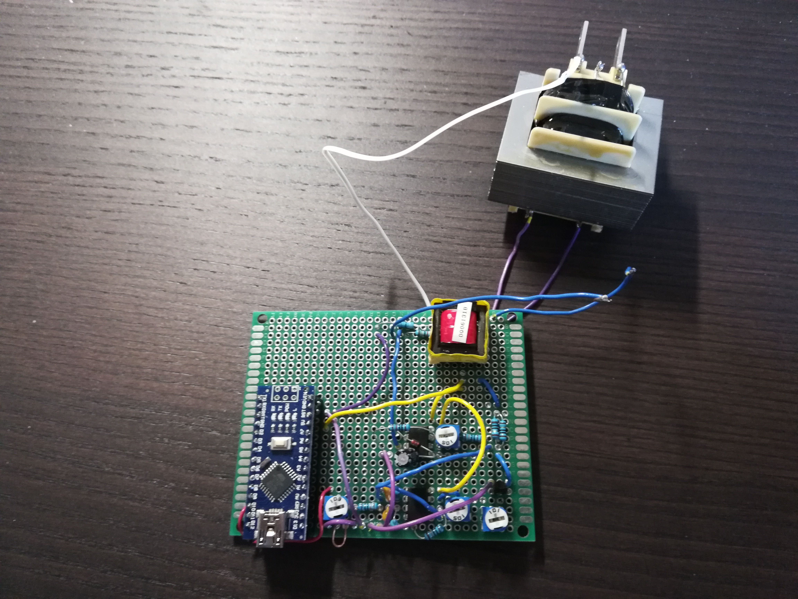

Prototypes

Version 1
The feeling it produced was very intense, sharp, and inconsistent.

Version 2
More robust and controllable, and uses PWM signals fine-tune output voltage.

Version 3
Switched from protoboard to PCB. Did not use a ring, so the stimulation felt very weak.
Current Version
Implemented a feedback loop to maintain consistent stimulation across various fingertip resistances.